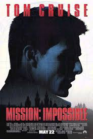

Misión imposible

Precio:13,30€
Director:Brian De Palma
Reparto:Tom Cruise, Emmanuelle Béart, Jon Voight, Jean Reno, Vanessa Redgrave, Kristin Scott Thomas, David Schneider, Emilio Estévez, Henry Czerny, Ving Rhames, Ingeborga Dapkunaite, Marcel Iures, Marek Vasut
Sinopsis:
Ethan Hunt es un superespía capaz de llevar a cabo la misión más peligrosa con la máxima eficacia y elegancia. Forma parte de un competente equipo dirigido por el agente Jim Phelps, que ha vuelto a reunir a sus hombres para participar en una dificilísima misión: evitar la venta de un disco robado que contiene información secreta de vital importancia.Año:1996
Duracion:110 min.
País:Estados Unidos
Premios:
1996: Satellite Awards: Nominada a Mejor montaje
1996: Nominada a los Premios Razzie
Películas similares

Indiana Jones y la última cruzada

Indiana Jones y el reino de la calavera de cristal
Indiana Jones y el arca perdida
OH!-PIÑONES
"Cuatro años después, y con la secuela de John Woo para comparar, 'Mission: Impossible' resulta algo anticuada, pero su historia es mejor y es un thriller más genuinamente eficaz
Javier OcañaPuntuación:4 piñones
"Espectáculo estropeado por un farragoso guión"
Esther GarcíaPuntuación:1 piñón